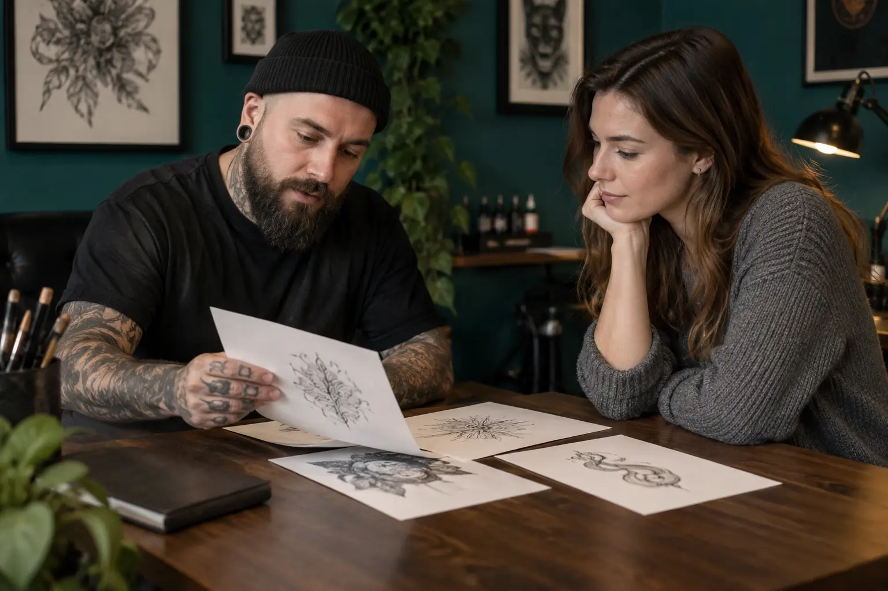

Tatuiruotės eskizo konsultacija: stilius, mastelis ir autorystė
Autorius: Madbeauty redakcija · Numatyta 2026 m. gruodžio 11 d. 16:00 (Lietuvos laiku)
Tatuiruotės eskizo konsultacija: stilius, mastelis ir autorystė. Aptariamos temos: referencas ir originalus eskizas; dydžio bei detalių kompromisai.

Tatuiruotės eskizo konsultacija padeda norimą vaizdą paversti aiškia užduotimi: aptarti stilių, vietą, dydį ir tai, kurios detalės svarbiausios. Ji gali baigtis pokalbiu, eskizo variantu ar sutartu pataisymu, bet tiksli apimtis priklauso nuo konkretaus pasiūlymo. Tad lyginkite ne vien žodį „konsultacija“, o ką gaunate jos pabaigoje.
Tatuiruotės pigmentas įterpiamas į odą, o šalinimas ar korekcija nėra paprastas grįžimas prie pradinės būklės. Dėl to verta įvertinti eskizą numatytoje vietoje ir susitarti, ką dar galima keisti prieš patvirtinant galutinį variantą. Šią ribą paaiškina FDA informacija apie tatuiruotes.
Referencas nurodo kryptį, o ne galutinį eskizą
Referencas gali parodyti norimą nuotaiką, linijų pobūdį, spalvų santykį ar kompoziciją. Prie kiekvieno pavyzdžio pasižymėkite, kas jame patinka ir ko nenorite perkelti. Taip lengviau sukurti savitą sprendimą, o ne prašyti atkartoti visą svetimą darbą.
Jei rodote kito kūrėjo piešinį ar nuotrauką, užrašykite jos autorių ir nuorodą, o meistrui paaiškinkite, kaip ją naudojate kaip įkvėpimą. Jei norite konkretaus svetimo dizaino panaudojimo, aptarkite tai su jo autoriumi. Savo eskizą ir pasirinktus pavyzdžius laikykite atskirai: taip aišku, kas yra jūsų sumanymas, o kas – tik nuoroda.
Dydis ir detalės sprendžiami kartu
Tas pats motyvas mažame ir didesniame formate gali atrodyti skirtingai. Prieš patvirtindami eskizą aptarkite, kaip jo kryptis ir pagrindinis kontūras veiks pasirinktoje vietoje, kurias smulkias detales būtina išsaugoti, o kurias galima supaprastinti. Universalios mažiausio dydžio ar detalių taisyklės čia nepakeičia konkretaus eskizo ir vietos įvertinimo.
- Jei motyvas turi išlikti atpažįstamas iš pirmo žvilgsnio, pirmiausia įvardykite svarbiausią siluetą ar formą.
- Jei pavyzdyje daug smulkių elementų, pasirinkite kelis, kurie jums reikšmingiausi, ir aptarkite, ką keistų jų atsisakymas.
- Jei dar svarstote vietą, paprašykite palyginti eskizo kryptį skirtingose numatytose vietose; vietos pakeitimas gali keisti ir kompoziciją.
Ką verta sutarti apie autorystę ir rezultatą
„Eskizo konsultacija“ pati savaime nepasako, ar pasiūlymas apima naują piešinį, vieną ar kelis variantus, pataisymus, galutinį failą ar trafaretui paruoštą versiją. Prieš susitardami paprašykite aiškiai įvardyti, koks rezultatas bus perduotas ir kaip bus tvarkomi pakeitimai. Taip pat atskirkite eskizo patvirtinimą nuo sprendimo atlikti tatuiravimo procedūrą: tai susiję, bet skirtingi etapai.
Trumpa eskizo užduoties kortelė
Prieš konsultaciją užpildykite šią kortelę. Ji padeda kalbėtis apie pasirinkimus, o ne tik rodyti nuotraukas:
- Sumanymas: ką norite pavaizduoti ir kokia jo prasmė jums?
- Vieta ir kryptis: kur svarstote tatuiruotę, ar motyvas turi būti matomas iš konkrečios pusės?
- Svarbiausia detalė: kokia viena forma, linija ar elementas turėtų išlikti?
- Lankstumas: ką galima supaprastinti, pakeisti arba visai pašalinti, jei visas sumanymas netelpa į pasirinktą dydį?
- Referencai: prie kiekvieno pavyzdžio nurodykite, kokią idėją jis perteikia, ir kas jame netinka.
- Sutartas rezultatas: ar gausite pokalbį, eskizą, pataisymą ar galutinį failą, ir kokie pakeitimai įtraukti?
Iliustracinis pavyzdys
Tarkime, norite botaninių motyvų, o rastoje nuotraukoje patinka lapų judėjimas, bet ne visas piešinys. Užduoties kortelėje įrašykite, kurie augalo bruožai jums svarbūs, kur norėtumėte motyvo ir kurių nuotraukos detalių nenorite perkelti. Paprašykite parodyti, kaip pasikeistų bendras vaizdas, jei dalis smulkių elementų būtų supaprastinta. Tai tik pavyzdys: konkretų eskizą ir jo pritaikymą aptarkite su pasirinktu kūrėju.
Platesnį pasirinkimo kontekstą rasite tatuiruotės gide: „Tatuiruotės gidas: idėja, vieta, eskizas ir atsakingas pasirinkimas“.
Procedūrų aprašai kataloge: Tatuiruotės eskizo konsultacija. Miestą ir realaus teikėjo pasiūlymą pasirinkite kataloge, kai tokia pasiūla pateikta.
Susiję gidai
Šaltiniai
- NVSC · tatuiravimas ir ilgalaikis makiažas · nvsc.lrv.lt
- FDA · tatuiruotės ir permanentinis makiažas · www.fda.gov
- VASPVT · sveikatos paslaugų teisėtumo patikra · vaspvt.lrv.lt
- Jo Mi: vėrimo meniu su įtrauktu papuošalu · jomitattoo.lt